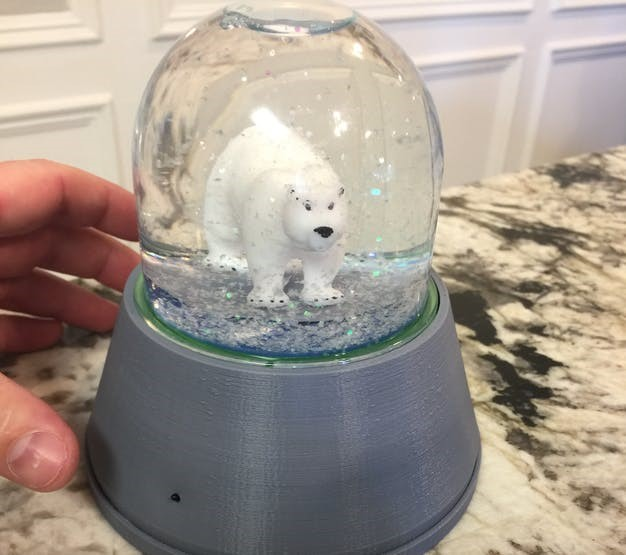
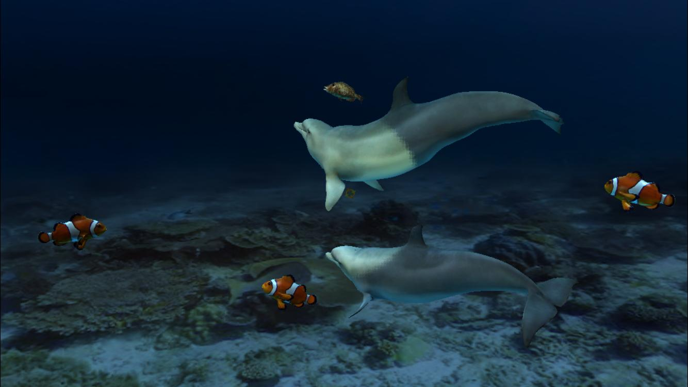
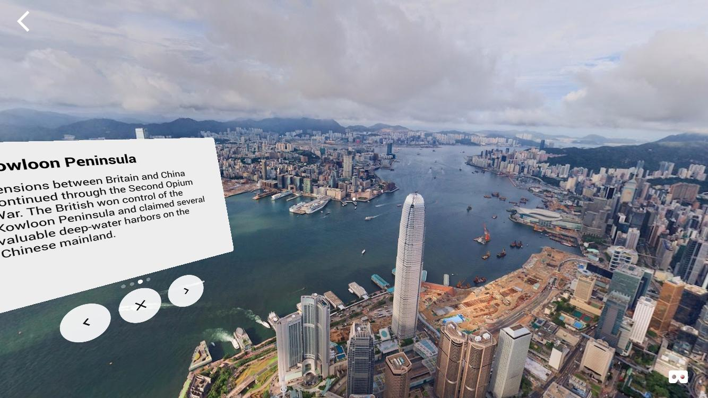
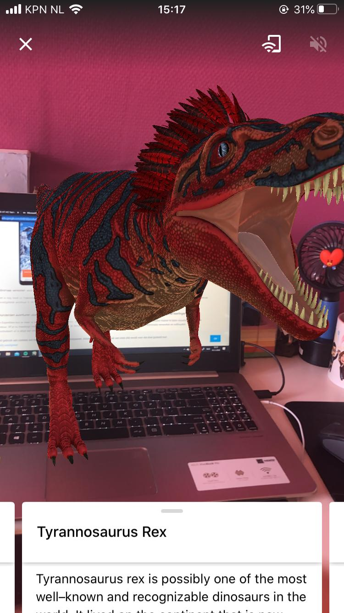
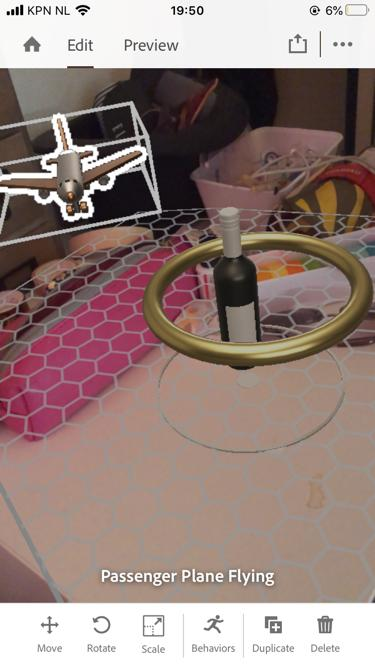
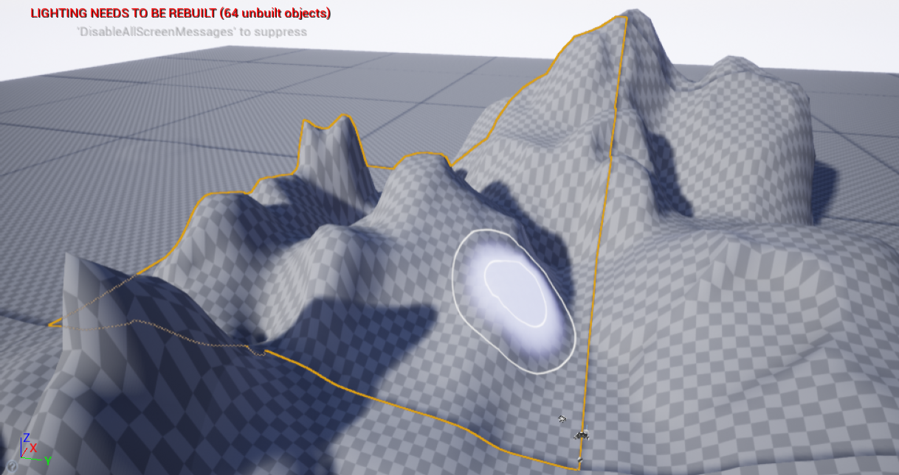
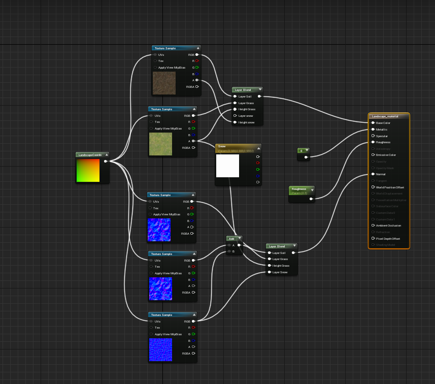
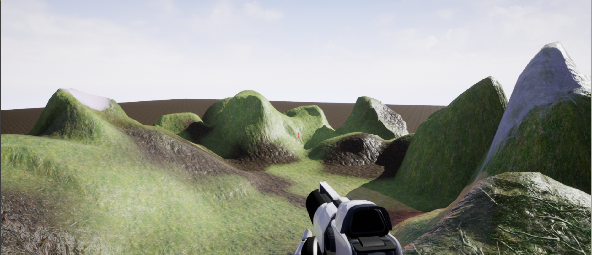
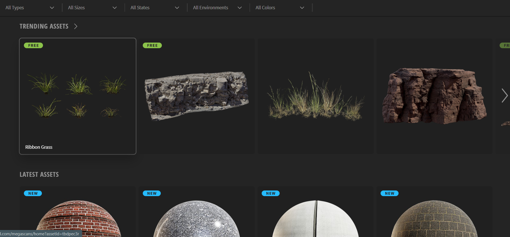
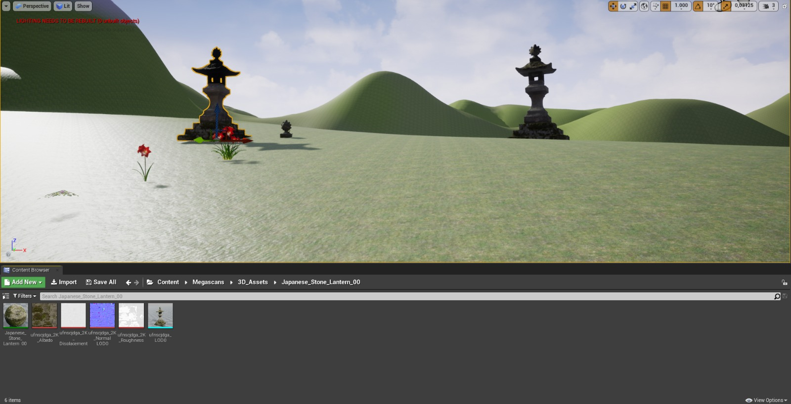

Research
Let it Snow - IoT Snow Globe with Virtual Reality Web
Gemaakt door: Johnathan Hottell, Ron Dagdag
De interactie met de sneeuwbol hierboven is gekoppeld aan wat je ziet in VR. Dus als je de sneeuwbol op z’n kop zet, gaat het sneeuwen. Als er een knopje ingedrukt wordt op de sneeuwbol komt er smog in het beeld van degene die het bekijkt in VR. Ik vind de koppeling tussen deze fysieke sneeuwbol en het VR gedeelte erg leuk bedacht. Daarnaast vind ik de boodschap mooi, die met klimaatsverandering te maken heeft. Door het op een speelse manier over te brengen is het leuker om erover te leren.
linkAquarium VR
Gemaakt door: EON Reality
Dit is een app die gewoon in de App Store te vinden is. Eigenlijk zegt de naam van de app het al. Je staat als gebruiker in de zee/aquarium en kan rond kijken naar alle vissen die rond zwemmen. Je hebt als het ware een zaklamp op je hoofd, dus waar je naar kijkt wordt extra uitgelicht. Ik kwam later na het gebruiken van deze app dat er geluid bij zit. Er zit een muziekje onder en een man die wat uitlegt over he dier waar je naar kijkt. Het is best een leuke ervaring, erg relaxend. Ik vind het ook vrij realistisch eruit zien.
linkGoogle Expeditions
Gemaakt door: Google
 Met google expeditions kan je naar veel verschillende plekken op aarde en rond kijken. Inclusief informatie over de plek waar je bent. Daarnaast kan je in AR verschillende voorwerpen of dieren laten zien. Ik heb het uitgeprobeerd met dinosaurussen. Volgens mij kan je het ook nog koppelen met klassen, zodat iedere leerling hetzelfde ziet. Ik denk dat dit een ontzettende nuttige app kan zijn in het onderwijs, waar je een interactieve les nog leuker kan maken door hiermee te werken. Het is heel informatief.
linkTinkering
Aero
Ik zag bij het bestand over deze challenge Adobe Aero staan en aangezien ik een Creative Cloud abonnement heb, is het toch gratis om alles uit te proberen. Dus ik heb het gedownload op mijn telefoon en er gewoon meegespeeld. Het voordeel van Aero is dat het heel simpel is Ik had na twee kleine AR dingen gebouwd te hebben, het wel door hoe het werkte. Het nadeel is, dat er weinig opties zijn. Ik zou hier dus niet mijn eindproduct in willen maken.
Landscape
Toen ik bij de fase Tinkering aan kwam, had ik al een idee dat ik een landschap wilde maken in Unreal Engine. Ik vond toen een tutorial, die veel ins en outs van het maken van landschappen besprak. Het begon met het maken van een heightmap. Dit was eigenlijk gewoon het vormen van bergen, heuvels en kuilen. Ik heb daar verschillende tools voor gebruikt.

Maar dan heb je nog een lege map, zonder enig materiaal erop. Dit ziet er dan nog ongelofelijk kaal uit, dus toen heb ik geleerd hoe je een materiaal maakt. Dit werd ook wel behandeld in de tutorial die we tijdens de workshop gevolgd hebben, maar hier ging het ook over hoe je ‘schildert’ met materialen. Dus ik heb grass, modder en sneeuw gemaakt, zodat er variatie in het landschap zat.

En toen was dit het eindresultaat:

3D Modellen
Als laatste, aangezien ik dus van plan was om een landschap te maken, wilde ik wel weten hoe ik 3d modellen moest importeren en hoe ik aan deze modellen kwam. Na wat zoeken op het internet kwam ik op Quixel. Quixel is een site met heel veel verschillende 3d modellen die te maken hebben met landschappen. Heel veel bomen, rotsen, bloemen, maar ook beelden en materialen. Ik heb een tutorial gevolgt met hoe ik dingen exporteer vanaf Quixel en hoe ik het in Unreal Engine krijg.

Design & Build
Mijn VR Experience is een landschap die een vrij dromerig sfeer heeft. Ik heb het gemaakt in Unreal Engine. Het is bedoelt om degene die deze VR experience bekijkt even in een rustige droomwereld weg kan dromen. Er zijn krekels in de achtergrond te horen en het is vooral een mooie omgeving. Mijn VR Experience sluit aan op VR, omdat de gebruiker helemaal ‘weg’ kan zijn in het landschap dat ik gemaakt heb. Tuurlijk zou je het ook kunnen bekijken als een normale game op de computer, maar dan wordt het helemaal onderdompelen in een droomwereld moeilijker, omdat de gebruiker dan sneller afgeleid wordt door andere dingen buiten de game.
Bekijk hier het filmpje!Reflect
Ik vond het heel gaaf om iets te maken met VR. Ik zag er in het begin best tegen op, omdat het werken met Unreal Engine erg ver van me ligt, omdat ik zelf niet echt games speel. Ik had geen idee hoe ik in vredesnaam in een korte tijd zo’n experience zou moeten gaan maken. Ik vond het in het begin ook vrij technisch en snapte er niet heel veel van, maar uiteindelijk snapte ik unreal engine steeds beter en ging het maken van de experience ook veel sneller, en begon het steeds leuker te vinden. Ik ben nu best trots op het werk wat ik nu heb geleverd, dus voor de volgende keer moet ik iets minder snel tegen iets op zitten, want uiteindelijk lukt het wel.
Ik ben erg tevreden met mijn eindproduct en ik had echt niet verwacht dat ik zo iets in een korte tijd zou kunnen maken. Ik vond het werken met Unreal Engine uiteindelijk best leuk en zou het best leuk vinden om daar in nieuwe dingen uit te proberen met dit programma. Toch was het best moeilijk om met het programma om te gaan. Het werken met de materials was lastig en vind ik zelfs nu nog niet eens duidelijk, maar met een aantal tutorials op Youtube kwam ik er wel uit.
Ik denk dat we VR en AR steeds meer zullen gaan zien, dus ik denk als interaction designers het best belangrijk is om iets te weten van deze nieuwe technologieën. Tijdens de concept fase van andere projecten heb ik al meerdere keren meegemaakt dat er een idee komt wat te maken heeft met AR of VR, omdat er met deze nieuwe technologie veel dingen mogelijk zijn. Ik denk dat het daarom steeds een grotere rol gaat spelen in webdesign.